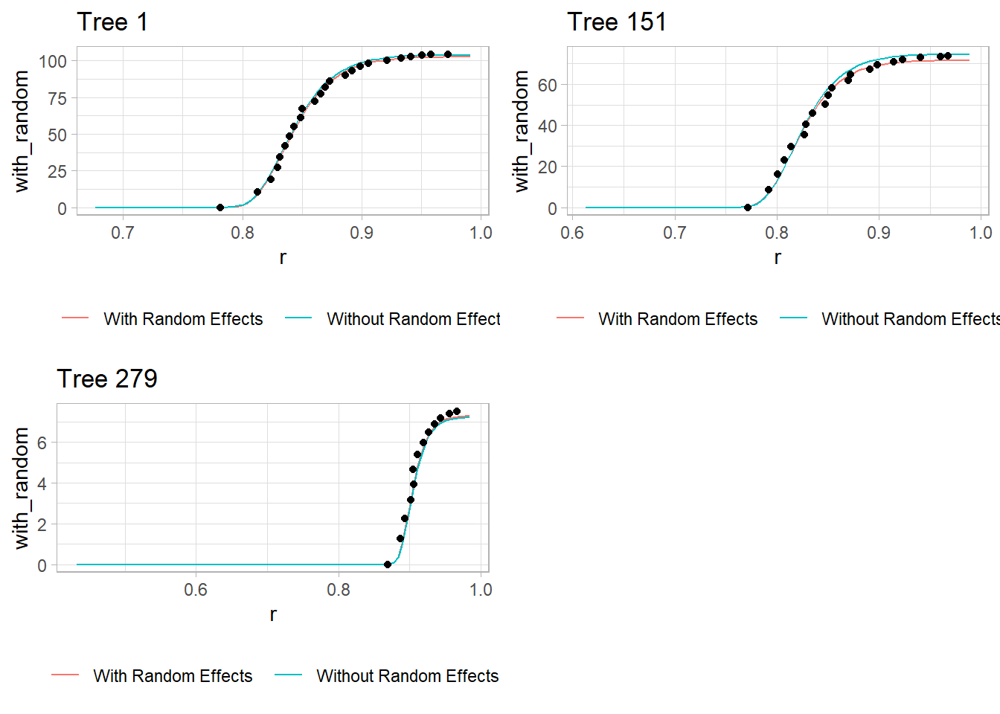

9.2 Application
9.2.1 Binomial (CBPP Data)
data(cbpp,package = "lme4")
head(cbpp)
#> herd incidence size period
#> 1 1 2 14 1
#> 2 1 3 12 2
#> 3 1 4 9 3
#> 4 1 0 5 4
#> 5 2 3 22 1
#> 6 2 1 18 2PQL
Pro:
Linearizes the response to have a pseudo-response as the mean response (like LMM)
computationally efficient
Cons:
biased for binary, Poisson data with small counts
random effects have to be interpreted on the link scale
can’t interpret AIC/BIC value
library(MASS)
pql_cbpp <-
glmmPQL(
cbind(incidence, size - incidence) ~ period,
random = ~ 1 | herd,
data = cbpp,
family = binomial(link = "logit"),
verbose = F
)
summary(pql_cbpp)
#> Linear mixed-effects model fit by maximum likelihood
#> Data: cbpp
#> AIC BIC logLik
#> NA NA NA
#>
#> Random effects:
#> Formula: ~1 | herd
#> (Intercept) Residual
#> StdDev: 0.5563535 1.184527
#>
#> Variance function:
#> Structure: fixed weights
#> Formula: ~invwt
#> Fixed effects: cbind(incidence, size - incidence) ~ period
#> Value Std.Error DF t-value p-value
#> (Intercept) -1.327364 0.2390194 38 -5.553372 0.0000
#> period2 -1.016126 0.3684079 38 -2.758156 0.0089
#> period3 -1.149984 0.3937029 38 -2.920944 0.0058
#> period4 -1.605217 0.5178388 38 -3.099839 0.0036
#> Correlation:
#> (Intr) perid2 perid3
#> period2 -0.399
#> period3 -0.373 0.260
#> period4 -0.282 0.196 0.182
#>
#> Standardized Within-Group Residuals:
#> Min Q1 Med Q3 Max
#> -2.0591168 -0.6493095 -0.2747620 0.5170492 2.6187632
#>
#> Number of Observations: 56
#> Number of Groups: 15is how the herd specific outcome odds varies.
We can interpret the fixed effect coefficients just like in GLM. Because we use logit link function here, we can say that the log odds of the probability of having a case in period 2 is -1.016 less than period 1 (baseline).
summary(pql_cbpp)$tTable
#> Value Std.Error DF t-value p-value
#> (Intercept) -1.327364 0.2390194 38 -5.553372 2.333216e-06
#> period2 -1.016126 0.3684079 38 -2.758156 8.888179e-03
#> period3 -1.149984 0.3937029 38 -2.920944 5.843007e-03
#> period4 -1.605217 0.5178388 38 -3.099839 3.637000e-03Numerical Integration
Pro:
- more accurate
Con:
computationally expensive
won’t work for complex models.
library(lme4)
numint_cbpp <-
glmer(
cbind(incidence, size - incidence) ~
period + (1 | herd),
data = cbpp,
family = binomial(link = "logit")
)
summary(numint_cbpp)
#> Generalized linear mixed model fit by maximum likelihood (Laplace
#> Approximation) [glmerMod]
#> Family: binomial ( logit )
#> Formula: cbind(incidence, size - incidence) ~ period + (1 | herd)
#> Data: cbpp
#>
#> AIC BIC logLik deviance df.resid
#> 194.1 204.2 -92.0 184.1 51
#>
#> Scaled residuals:
#> Min 1Q Median 3Q Max
#> -2.3816 -0.7889 -0.2026 0.5142 2.8791
#>
#> Random effects:
#> Groups Name Variance Std.Dev.
#> herd (Intercept) 0.4123 0.6421
#> Number of obs: 56, groups: herd, 15
#>
#> Fixed effects:
#> Estimate Std. Error z value Pr(>|z|)
#> (Intercept) -1.3983 0.2312 -6.048 1.47e-09 ***
#> period2 -0.9919 0.3032 -3.272 0.001068 **
#> period3 -1.1282 0.3228 -3.495 0.000474 ***
#> period4 -1.5797 0.4220 -3.743 0.000182 ***
#> ---
#> Signif. codes: 0 '***' 0.001 '**' 0.01 '*' 0.05 '.' 0.1 ' ' 1
#>
#> Correlation of Fixed Effects:
#> (Intr) perid2 perid3
#> period2 -0.363
#> period3 -0.340 0.280
#> period4 -0.260 0.213 0.198For small data set, the difference between two approaches are minimal
library(rbenchmark)
benchmark(
"MASS" = {
pql_cbpp <-
glmmPQL(
cbind(incidence, size - incidence) ~ period,
random = ~ 1 | herd,
data = cbpp,
family = binomial(link = "logit"),
verbose = F
)
},
"lme4" = {
glmer(
cbind(incidence, size - incidence) ~ period + (1 | herd),
data = cbpp,
family = binomial(link = "logit")
)
},
replications = 50,
columns = c("test", "replications", "elapsed", "relative"),
order = "relative"
)
#> test replications elapsed relative
#> 1 MASS 50 3.79 1.000
#> 2 lme4 50 7.79 2.055In numerical integration, we can set nAGQ > 1 to switch the method of likelihood evaluation, which might increase accuracy
library(lme4)
numint_cbpp_GH <-
glmer(
cbind(incidence, size - incidence) ~ period + (1 | herd),
data = cbpp,
family = binomial(link = "logit"),
nAGQ = 20
)
summary(numint_cbpp_GH)$coefficients[, 1] -
summary(numint_cbpp)$coefficients[, 1]
#> (Intercept) period2 period3 period4
#> -0.0008808634 0.0005160912 0.0004066218 0.0002644629Bayesian approach to GLMMs
assume the fixed effects parameters have distribution
can handle models with intractable result under traditional methods
computationally expensive
library(MCMCglmm)
Bayes_cbpp <-
MCMCglmm(
cbind(incidence, size - incidence) ~ period,
random = ~ herd,
data = cbpp,
family = "multinomial2",
verbose = FALSE
)
summary(Bayes_cbpp)
#>
#> Iterations = 3001:12991
#> Thinning interval = 10
#> Sample size = 1000
#>
#> DIC: 537.9598
#>
#> G-structure: ~herd
#>
#> post.mean l-95% CI u-95% CI eff.samp
#> herd 0.03246 1.03e-16 0.2073 105.7
#>
#> R-structure: ~units
#>
#> post.mean l-95% CI u-95% CI eff.samp
#> units 1.095 0.3017 2.281 306.9
#>
#> Location effects: cbind(incidence, size - incidence) ~ period
#>
#> post.mean l-95% CI u-95% CI eff.samp pMCMC
#> (Intercept) -1.5247 -2.1732 -0.9248 717.5 <0.001 ***
#> period2 -1.2812 -2.3489 -0.3661 821.7 0.012 *
#> period3 -1.4152 -2.3443 -0.3088 691.5 0.004 **
#> period4 -1.9335 -3.2407 -0.8315 554.9 <0.001 ***
#> ---
#> Signif. codes: 0 '***' 0.001 '**' 0.01 '*' 0.05 '.' 0.1 ' ' 1MCMCglmmfits a residual variance component (useful with dispersion issues)
summary(Bayes_cbpp)$solutions
#> post.mean l-95% CI u-95% CI eff.samp pMCMC
#> (Intercept) -1.524731 -2.173223 -0.9247605 717.5157 0.001
#> period2 -1.281212 -2.348887 -0.3660568 821.6596 0.012
#> period3 -1.415170 -2.344293 -0.3087640 691.5463 0.004
#> period4 -1.933501 -3.240745 -0.8314840 554.9365 0.001interpret Bayesian “credible intervals” similarly to confidence intervals
Make sure you make post-hoc diagnoses

There is no trend, well-mixed

For the herd variable, a lot of them are 0, which suggests problem. To fix the instability in the herd effect sampling, we can either
modify the prior distribution on the herd variation
increases the number of iteration
library(MCMCglmm)
Bayes_cbpp2 <-
MCMCglmm(
cbind(incidence, size - incidence) ~ period,
random = ~ herd,
data = cbpp,
family = "multinomial2",
nitt = 20000,
burnin = 10000,
prior = list(G = list(list(
V = 1, nu = .1
))),
verbose = FALSE
)
xyplot(as.mcmc(Bayes_cbpp2$VCV), layout = c(2, 1))
To change the shape of priors, in MCMCglmm use:
Vcontrols for the location of the distribution (default = 1)nucontrols for the concentration around V (default = 0)
9.2.2 Count (Owl Data)
library(glmmTMB)
library(dplyr)
data(Owls, package = "glmmTMB")
Owls <- Owls %>%
rename(Ncalls = SiblingNegotiation)In a typical Poisson model, \(\lambda\) (Poisson mean), is model as \(\log(\lambda) = \mathbf{x'\beta}\) But if the response is the rate (e.g., counts per BroodSize), we could model it as \(\log(\lambda / b) = \mathbf{x'\beta}\) , equivalently \(\log(\lambda) = \log(b) + \mathbf{x'\beta}\) where \(b\) is BroodSize. Hence, we “offset” the mean by the log of this variable.
owls_glmer <-
glmer(
Ncalls ~ offset(log(BroodSize))
+ FoodTreatment * SexParent +
(1 | Nest),
family = poisson,
data = Owls
)
summary(owls_glmer)
#> Generalized linear mixed model fit by maximum likelihood (Laplace
#> Approximation) [glmerMod]
#> Family: poisson ( log )
#> Formula: Ncalls ~ offset(log(BroodSize)) + FoodTreatment * SexParent +
#> (1 | Nest)
#> Data: Owls
#>
#> AIC BIC logLik deviance df.resid
#> 5212.8 5234.8 -2601.4 5202.8 594
#>
#> Scaled residuals:
#> Min 1Q Median 3Q Max
#> -3.5529 -1.7971 -0.6842 1.2689 11.4312
#>
#> Random effects:
#> Groups Name Variance Std.Dev.
#> Nest (Intercept) 0.2063 0.4542
#> Number of obs: 599, groups: Nest, 27
#>
#> Fixed effects:
#> Estimate Std. Error z value Pr(>|z|)
#> (Intercept) 0.65585 0.09567 6.855 7.12e-12 ***
#> FoodTreatmentSatiated -0.65612 0.05606 -11.705 < 2e-16 ***
#> SexParentMale -0.03705 0.04501 -0.823 0.4104
#> FoodTreatmentSatiated:SexParentMale 0.13135 0.07036 1.867 0.0619 .
#> ---
#> Signif. codes: 0 '***' 0.001 '**' 0.01 '*' 0.05 '.' 0.1 ' ' 1
#>
#> Correlation of Fixed Effects:
#> (Intr) FdTrtS SxPrnM
#> FdTrtmntStt -0.225
#> SexParentMl -0.292 0.491
#> FdTrtmS:SPM 0.170 -0.768 -0.605nest explains a relatively large proportion of the variability (its standard deviation is larger than some coefficients)
the model fit isn’t great (deviance of 5202 on 594 df)
# Negative binomial model
owls_glmerNB <-
glmer.nb(Ncalls ~ offset(log(BroodSize))
+ FoodTreatment * SexParent
+ (1 | Nest), data = Owls)
c(Deviance = round(summary(owls_glmerNB)$AICtab["deviance"], 3),
df = summary(owls_glmerNB)$AICtab["df.resid"])
#> Deviance.deviance df.df.resid
#> 3483.616 593.000There is an improvement using negative binomial considering over-dispersion

To account for too many 0s in these data, we can use zero-inflated Poisson (ZIP) model.
glmmTMBcan handle ZIP GLMMs since it adds automatic differentiation to existing estimation strategies.
library(glmmTMB)
owls_glmm <-
glmmTMB(
Ncalls ~ FoodTreatment * SexParent + offset(log(BroodSize)) +
(1 | Nest),
ziformula = ~ 0,
family = nbinom2(link = "log"),
data = Owls
)
owls_glmm_zi <-
glmmTMB(
Ncalls ~ FoodTreatment * SexParent + offset(log(BroodSize)) +
(1 | Nest),
ziformula = ~ 1,
family = nbinom2(link = "log"),
data = Owls
)
# Scale Arrival time to use as a covariate for zero-inflation parameter
Owls$ArrivalTime <- scale(Owls$ArrivalTime)
owls_glmm_zi_cov <- glmmTMB(
Ncalls ~ FoodTreatment * SexParent +
offset(log(BroodSize)) +
(1 | Nest),
ziformula = ~ ArrivalTime,
family = nbinom2(link = "log"),
data = Owls
)
as.matrix(anova(owls_glmm, owls_glmm_zi))
#> Df AIC BIC logLik deviance Chisq Chi Df
#> owls_glmm 6 3495.610 3521.981 -1741.805 3483.610 NA NA
#> owls_glmm_zi 7 3431.646 3462.413 -1708.823 3417.646 65.96373 1
#> Pr(>Chisq)
#> owls_glmm NA
#> owls_glmm_zi 4.592983e-16
as.matrix(anova(owls_glmm_zi, owls_glmm_zi_cov))
#> Df AIC BIC logLik deviance Chisq Chi Df
#> owls_glmm_zi 7 3431.646 3462.413 -1708.823 3417.646 NA NA
#> owls_glmm_zi_cov 8 3422.532 3457.694 -1703.266 3406.532 11.11411 1
#> Pr(>Chisq)
#> owls_glmm_zi NA
#> owls_glmm_zi_cov 0.0008567362
summary(owls_glmm_zi_cov)
#> Family: nbinom2 ( log )
#> Formula:
#> Ncalls ~ FoodTreatment * SexParent + offset(log(BroodSize)) + (1 | Nest)
#> Zero inflation: ~ArrivalTime
#> Data: Owls
#>
#> AIC BIC logLik deviance df.resid
#> 3422.5 3457.7 -1703.3 3406.5 591
#>
#> Random effects:
#>
#> Conditional model:
#> Groups Name Variance Std.Dev.
#> Nest (Intercept) 0.07487 0.2736
#> Number of obs: 599, groups: Nest, 27
#>
#> Dispersion parameter for nbinom2 family (): 2.22
#>
#> Conditional model:
#> Estimate Std. Error z value Pr(>|z|)
#> (Intercept) 0.84778 0.09961 8.511 < 2e-16 ***
#> FoodTreatmentSatiated -0.39529 0.13742 -2.877 0.00402 **
#> SexParentMale -0.07025 0.10435 -0.673 0.50079
#> FoodTreatmentSatiated:SexParentMale 0.12388 0.16449 0.753 0.45138
#> ---
#> Signif. codes: 0 '***' 0.001 '**' 0.01 '*' 0.05 '.' 0.1 ' ' 1
#>
#> Zero-inflation model:
#> Estimate Std. Error z value Pr(>|z|)
#> (Intercept) -1.3018 0.1261 -10.32 < 2e-16 ***
#> ArrivalTime 0.3545 0.1074 3.30 0.000966 ***
#> ---
#> Signif. codes: 0 '***' 0.001 '**' 0.01 '*' 0.05 '.' 0.1 ' ' 1We can see ZIP GLMM with an arrival time covariate on the zero is best.
arrival time has a positive effect on observing a nonzero number of calls
interactions are non significant, the food treatment is significant (fewer calls after eating)
nest variability is large in magnitude (without this, the parameter estimates change)
9.2.3 Binomial
library(agridat)
library(ggplot2)
library(lme4)
library(spaMM)
data(gotway.hessianfly)
dat <- gotway.hessianfly
dat$prop <- dat$y / dat$n
ggplot(dat, aes(x = lat, y = long, fill = prop)) +
geom_tile() +
scale_fill_gradient(low = 'white', high = 'black') +
geom_text(aes(label = gen, color = block)) +
ggtitle('Gotway Hessian Fly')
Fixed effects (\(\beta\)) = genotype
Random effects (\(\alpha\)) = block
flymodel <-
glmer(
cbind(y, n - y) ~ gen + (1 | block),
data = dat,
family = binomial,
nAGQ = 5
)
summary(flymodel)
#> Generalized linear mixed model fit by maximum likelihood (Adaptive
#> Gauss-Hermite Quadrature, nAGQ = 5) [glmerMod]
#> Family: binomial ( logit )
#> Formula: cbind(y, n - y) ~ gen + (1 | block)
#> Data: dat
#>
#> AIC BIC logLik deviance df.resid
#> 162.2 198.9 -64.1 128.2 47
#>
#> Scaled residuals:
#> Min 1Q Median 3Q Max
#> -2.38644 -1.01188 0.09631 1.03468 2.75479
#>
#> Random effects:
#> Groups Name Variance Std.Dev.
#> block (Intercept) 0.001022 0.03196
#> Number of obs: 64, groups: block, 4
#>
#> Fixed effects:
#> Estimate Std. Error z value Pr(>|z|)
#> (Intercept) 1.5035 0.3914 3.841 0.000122 ***
#> genG02 -0.1939 0.5302 -0.366 0.714644
#> genG03 -0.5408 0.5103 -1.060 0.289260
#> genG04 -1.4342 0.4714 -3.043 0.002346 **
#> genG05 -0.2037 0.5429 -0.375 0.707486
#> genG06 -0.9783 0.5046 -1.939 0.052533 .
#> genG07 -0.6041 0.5111 -1.182 0.237235
#> genG08 -1.6774 0.4907 -3.418 0.000630 ***
#> genG09 -1.3984 0.4725 -2.960 0.003078 **
#> genG10 -0.6817 0.5333 -1.278 0.201181
#> genG11 -1.4630 0.4843 -3.021 0.002522 **
#> genG12 -1.4591 0.4918 -2.967 0.003010 **
#> genG13 -3.5528 0.6600 -5.383 7.31e-08 ***
#> genG14 -2.5073 0.5264 -4.763 1.90e-06 ***
#> genG15 -2.0872 0.4851 -4.302 1.69e-05 ***
#> genG16 -2.9697 0.5383 -5.517 3.46e-08 ***
#> ---
#> Signif. codes: 0 '***' 0.001 '**' 0.01 '*' 0.05 '.' 0.1 ' ' 1Equivalently, we can use MCMCglmm , for a Bayesian approach
library(coda)
Bayes_flymodel <- MCMCglmm(
cbind(y, n - y) ~ gen ,
random = ~ block,
data = dat,
family = "multinomial2",
verbose = FALSE
)
plot(Bayes_flymodel$Sol[, 1], main = dimnames(Bayes_flymodel$Sol)[[2]][1])

9.2.4 Example from (Schabenberger and Pierce 2001) section 8.4.1
dat2 <- read.table("images/YellowPoplarData_r.txt")
names(dat2) <- c('tn', 'k', 'dbh', 'totht',
'dob', 'ht', 'maxd', 'cumv')
dat2$t <- dat2$dob / dat2$dbh
dat2$r <- 1 - dat2$dob / dat2$tothtThe cumulative volume relates to the complementary diameter (subplots were created based on total tree height)
library(ggplot2)
library(dplyr)
dat2 <- dat2 %>% group_by(tn) %>% mutate(
z = case_when(
totht < 74 & totht >= 0 ~ 'a: 0-74ft',
totht < 88 & totht >= 74 ~ 'b: 74-88',
totht < 95 & totht >= 88 ~ 'c: 88-95',
totht < 99 & totht >= 95 ~ 'd: 95-99',
totht < 104 & totht >= 99 ~ 'e: 99-104',
totht < 109 & totht >= 104 ~ 'f: 104-109',
totht < 115 & totht >= 109 ~ 'g: 109-115',
totht < 120 & totht >= 115 ~ 'h: 115-120',
totht < 140 & totht >= 120 ~ 'i: 120-150',
)
)
ggplot(dat2, aes(x = r, y = cumv)) +
geom_point(size = 0.5) +
facet_wrap(vars(z))
The proposed non-linear model:
\[ V_{id_j} = (\beta_0 + (\beta_1 + b_{1i})\frac{D^2_i H_i}{1000})(\exp[-(\beta_2 + b_{2i})t_{ij} \exp(\beta_3 t_{ij})]) + e_{ij} \]
where
\(b_{1i}, b_{2i}\) are random effects
\(e_{ij}\) are random errors
library(nlme)
tmp <-
nlme(
cumv ~ (b0 + (b1 + u1) *
(dbh * dbh * totht / 1000)) *
(exp(-(b2 + u2) * (t / 1000) * exp(b3 * t))),
data = dat2,
fixed = b0 + b1 + b2 + b3 ~ 1,
# 1 on the right hand side of the formula indicates
# a single fixed effects for the corresponding parameters
random = list(pdDiag(u1 + u2 ~ 1)),
#uncorrelated random effects
groups = ~ tn,
#group on trees so each tree w/ have u1 and u2
start = list(fixed = c(
b0 = 0.25,
b1 = 2.3,
b2 = 2.87,
b3 = 6.7
))
)
summary(tmp)
#> Nonlinear mixed-effects model fit by maximum likelihood
#> Model: cumv ~ (b0 + (b1 + u1) * (dbh * dbh * totht/1000)) * (exp(-(b2 + u2) * (t/1000) * exp(b3 * t)))
#> Data: dat2
#> AIC BIC logLik
#> 31103.73 31151.33 -15544.86
#>
#> Random effects:
#> Formula: list(u1 ~ 1, u2 ~ 1)
#> Level: tn
#> Structure: Diagonal
#> u1 u2 Residual
#> StdDev: 0.1508094 0.447829 2.226361
#>
#> Fixed effects: b0 + b1 + b2 + b3 ~ 1
#> Value Std.Error DF t-value p-value
#> b0 0.249386 0.12894687 6297 1.9340 0.0532
#> b1 2.288832 0.01266804 6297 180.6776 0.0000
#> b2 2.500497 0.05606685 6297 44.5985 0.0000
#> b3 6.848871 0.02140677 6297 319.9395 0.0000
#> Correlation:
#> b0 b1 b2
#> b1 -0.639
#> b2 0.054 0.056
#> b3 -0.011 -0.066 -0.850
#>
#> Standardized Within-Group Residuals:
#> Min Q1 Med Q3 Max
#> -6.694575e+00 -3.081861e-01 -8.904304e-05 3.469469e-01 7.855665e+00
#>
#> Number of Observations: 6636
#> Number of Groups: 336
nlme::intervals(tmp)
#> Approximate 95% confidence intervals
#>
#> Fixed effects:
#> lower est. upper
#> b0 -0.003318061 0.2493855 0.5020892
#> b1 2.264006036 2.2888322 2.3136584
#> b2 2.390620340 2.5004973 2.6103743
#> b3 6.806919342 6.8488713 6.8908232
#>
#> Random Effects:
#> Level: tn
#> lower est. upper
#> sd(u1) 0.1376084 0.1508094 0.1652768
#> sd(u2) 0.4056209 0.4478290 0.4944291
#>
#> Within-group standard error:
#> lower est. upper
#> 2.187258 2.226361 2.266162- Little different from the book because of different implementation of nonlinear mixed models.
library(cowplot)
nlmmfn <- function(fixed,rand,dbh,totht,t){
b0 <- fixed[1]
b1 <- fixed[2]
b2 <- fixed[3]
b3 <- fixed[4]
u1 <- rand[1]
u2 <- rand[2]
#just made so we can predict w/o random effects
return((b0+(b1+u1)*(dbh*dbh*totht/1000))*(exp(-(b2+u2)*(t/1000)*exp(b3*t))))
}
#Tree 1
pred1 <- data.frame(seq(1, 24, length.out = 100))
names(pred1) <- 'dob'
pred1$tn <- 1
pred1$dbh <- unique(dat2[dat2$tn == 1, ]$dbh)
pred1$t <- pred1$dob / pred1$dbh
pred1$totht <- unique(dat2[dat2$tn == 1, ]$totht)
pred1$r <- 1 - pred1$dob / pred1$totht
pred1$test <- predict(tmp, pred1)
pred1$testno <-
nlmmfn(
fixed = tmp$coefficients$fixed,
rand = c(0, 0),
pred1$dbh,
pred1$totht,
pred1$t
)
p1 <-
ggplot(pred1) +
geom_line(aes(x = r, y = test, color = 'with random')) +
geom_line(aes(x = r, y = testno, color = 'No random')) +
labs(colour = "") +
geom_point(data = dat2[dat2$tn == 1, ], aes(x = r, y = cumv)) +
ggtitle('Tree 1') + theme(legend.position = "none")
#Tree 151
pred151 <- data.frame(seq(1, 21, length.out = 100))
names(pred151) <- 'dob'
pred151$tn <- 151
pred151$dbh <- unique(dat2[dat2$tn == 151, ]$dbh)
pred151$t <- pred151$dob / pred151$dbh
pred151$totht <- unique(dat2[dat2$tn == 151, ]$totht)
pred151$r <- 1 - pred151$dob / pred151$totht
pred151$test <- predict(tmp, pred151)
pred151$testno <-
nlmmfn(
fixed = tmp$coefficients$fixed,
rand = c(0, 0),
pred151$dbh,
pred151$totht,
pred151$t
)
p2 <-
ggplot(pred151) +
geom_line(aes(x = r, y = test, color = 'with random')) +
geom_line(aes(x = r, y = testno, color = 'No random')) +
labs(colour = "") +
geom_point(data = dat2[dat2$tn == 151,], aes(x = r, y = cumv)) +
ggtitle('Tree 151') +
theme(legend.position = "none")
#Tree 279
pred279 <- data.frame(seq(1, 9, length.out = 100))
names(pred279) <- 'dob'
pred279$tn <- 279
pred279$dbh <- unique(dat2[dat2$tn == 279, ]$dbh)
pred279$t <- pred279$dob / pred279$dbh
pred279$totht <- unique(dat2[dat2$tn == 279, ]$totht)
pred279$r <- 1 - pred279$dob / pred279$totht
pred279$test <- predict(tmp, pred279)
pred279$testno <-
nlmmfn(
fixed = tmp$coefficients$fixed,
rand = c(0, 0),
pred279$dbh,
pred279$totht,
pred279$t
)
p3 <-
ggplot(pred279) +
geom_line(aes(x = r, y = test, color = 'with random')) +
geom_line(aes(x = r, y = testno, color = 'No random')) +
labs(colour = "") +
geom_point(data = dat2[dat2$tn == 279, ], aes(x = r, y = cumv)) +
ggtitle('Tree 279') +
theme(legend.position = "none")
plot_grid(p1, p2, p3)
red line = predicted observations based on the common fixed effects
teal line = tree-specific predictions with random effects